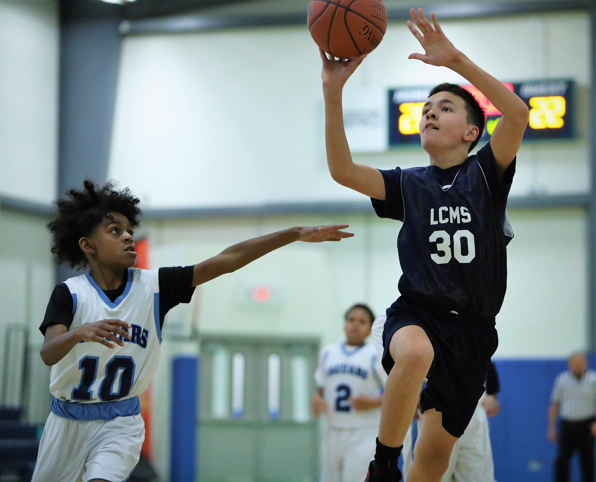

Favorite Photos
One of my favorite things to do is to take pictures of my kids playing sports and trying to get the action shot that without words can properly describe the moment and the effort that went into the play.
I also like to take pictures of anything I see that is so beautiful, I want to be reminded of the moment at some point.
The first picture below is a picture I took of my daughter playing soccer. It was a very competitive game and I remember at the time when I took the picture the look on her face, really displayed the effort she was putting forward to try and win the game.

The next picture below is a picture I took of my son playing basketball. I thought the picture was perfectly timed to not only capture his form in going to the basket, but also of the difficulty of the shot with the defender trying to block his shot.
The picture was also perfectly frame with a backdrop of the scoreboard to get a sense of timing to the game as well as other playing running towards the play, indicating my son was out ahead of the play on a fast break.

The last picture below is a picture I took of a sunset at Lake Hartwell, located in the Upstate in South Carolina. I really thought the picture captured the true color of the moment, and the reflective nature of the sun off of the water with the tree lined background to the lake
made the shot one to remember.